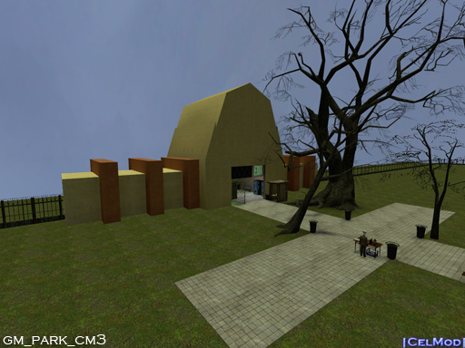
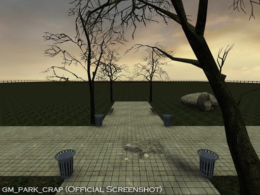

Park is the home map of the |CelMod| Server. It is the first map in the map cycle and is the decider of what map
comes next. The second map used to be randomized until complaints about playing the same map twice led it to
its own cycle. Park is updated every 6 months or so to fit the current season that the server is in. Depending on
the season, Park can either be sunny and warm or dark and cold. The main areas in Park are Areas 1 and 2,
which are both empty build areas meant for straight up building without the use of external scenery. The Park
area itself is usually the most popular area which players occupy. The current version of Park has an NPC
dungeon which can be accessed by entering under the exit sign in the Park HQ building.
The Beginning - gm_park
Before becoming the map that the map cycle only began on, Park started out as the only map in the cycle at all.
Each map used to last 3 hours long as opposed to 1, meaning Park would restart every 3 hours unless the next
map was changed by an admin. Later on, the map cycle included more maps such as Construct and Flatgrass.
The original version of Park was very primitive compared to today's version. However, it did have some striking
similarities such as the HQ building, Dr. Breen, and the surrounding fence. Park was originally named "gm_park",
which was made by an unknown player. The server hosted the original version of Park along with a modified version
snowy version called "gm_park_snow". This and other modifications of the original Park were made by Celsius.
The server would go on to host the original Park until a few days after the server went online. At this point,
the server was hosted on Celsius's computer and could only hold 10 players. The server changed its name to
|CelMod| Build/RP and used the first official |CelMod| Park map named "gm_park_cm".
gm_park_final
The first modification of Park by Celsius. This version was made before |CelMod| launched its own server. In fact it
was made only 2 weeks after Project |CelMod| started, on QwertyCody's Build Server. This version of Park
contains some very early scenery changes such as graffiti inside the HQ building and a slot for players to obtain
gravity guns inside. This is the only version of Park that was never used on the official |CelMod| Server.
gm_park_snow
The second modification of Park by Celsius. This version was made shortly after the |CelMod| Server began
beta testing. It was the first modification of Park to be used on the server and also the last. Each modification of
Park after this one was an update that would replace the previous. This map however, was played while the
original park was still the default map. So there were 2 versions of Park being used at the same time.
This map was exactly the same as the original Park map, except that it was covered in snow.
gm_park_cm
The first official update of Park included a now talking Dr. Breen who greeted players with the word "Welcome",
along with an above ground pool. This version of Park was used for the remaining week before the server's official
launch on December 26th, 2009. Once the server went official, Park was updated to "gm_park_cm2".
gm_park_cm2

Once the server went official, there were 2 servers for a very short period of time. While both hosted the updated Park
map, the transition from the old server to the new one was not well accepted. At first, the official server was VAC protected
while the original was not. They became known as the VAC and Non-VAC server. A few days later this was fixed when
the official server went Non-VAC and all the original players made the transition. The updated Park map didn't offer
anything more to the regular player than first updated map did. However, it did offer the admin's a new secret room they
could hide in. The admin room was located on the second floor of the Park HQ building and included a surveillance monitor
and one-sided windows. The admin room was accessible only by admins who flew inside. Any players or objects that
attempted to go inside were automatically teleported above the pool. The Park map itself did not have any updates to its
scenery. This led the players to create some scenery for the new Park map using props. The only props that were accepted
were created by a player named Standers37. He created a melon booth, Dr. Breen's office, a zombie hideout/weapons shop,
and the famous scene where Eli runs himself over with a car. Celsius contributed by making a scene of Dr. Breen wearing
a chef hat and cooking. Most of this scenery still remains in Park today. Despite receiving a small amount of updates to
its previous version, this version of Park would remain on the server for 3 months up until March 3rd, 2010, a full
year after Project |CelMod| began.
gm_park_cm3

In order to give tribute to a year of Project |CelMod|, the Park map was updated to its 3rd official version. At first
glance, the only update this version of Park got was an in-ground pool instead of an above ground one. However, below
the ground was another dimension of Park that players had never seen. This introduced a second area which players
could build in called the Underground area. This area was dark and empty with the exception of an upside down Park
HQ building. The Underground area was literally the above ground area of Park flipped upside down in darkness. It
included an upside down Welcome sign, an upside down admin room, and even an upside down Dr. Breen! With this
addition players could not only build in more than one place to decrease lag, but they could choose to build in day or night.
This version of Park remained the default map longer than any other version. It was updated on August 5th, 2010.
gm_park_crap

As the first time the server celebrated a holiday, April 1st changed the look of the server completely. |CelMod| was
changed to |CrapMod| for a day which changed the logo from blue to red. There was also an object name change
which made all cel objects called "crap" objects. The biggest update however, was the redesign of Park to fit a more
"crappy" feel. The light green Park grass was turned into a slimey dark green, the pool water was replaced with
poisonous slime, and Dr. Breen refused to welcome anybody to Park. This would only go on for a day, meaning
April 2nd restored Park back to its bright and sunny self.